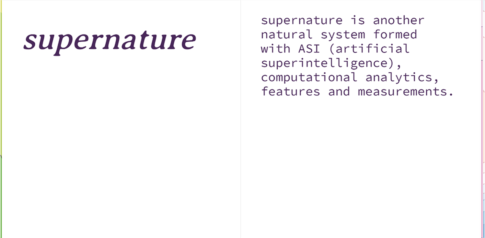
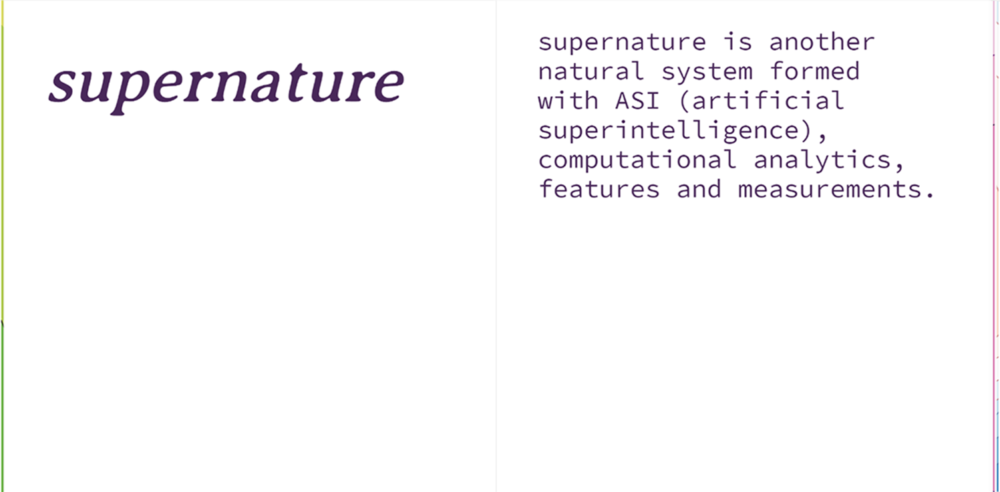

 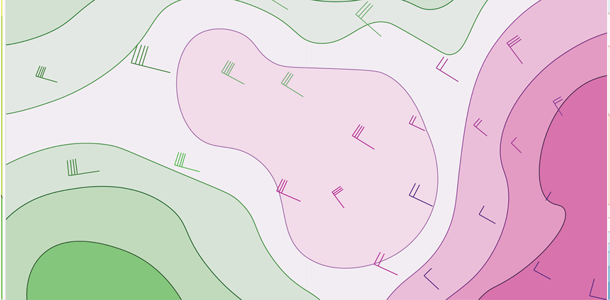
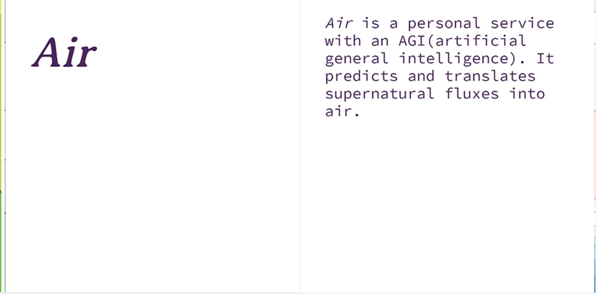
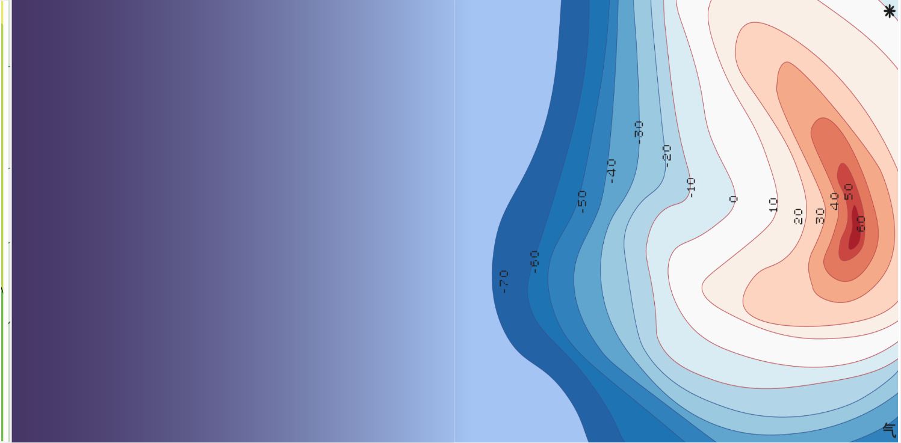
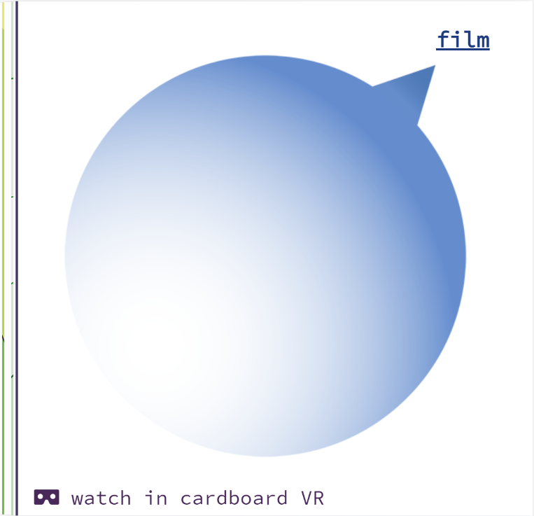
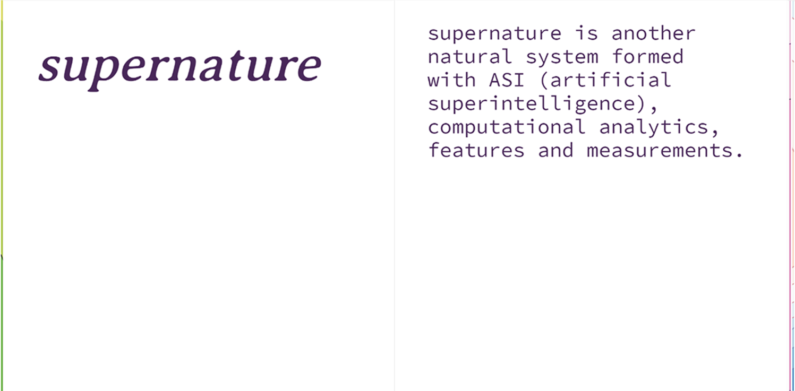
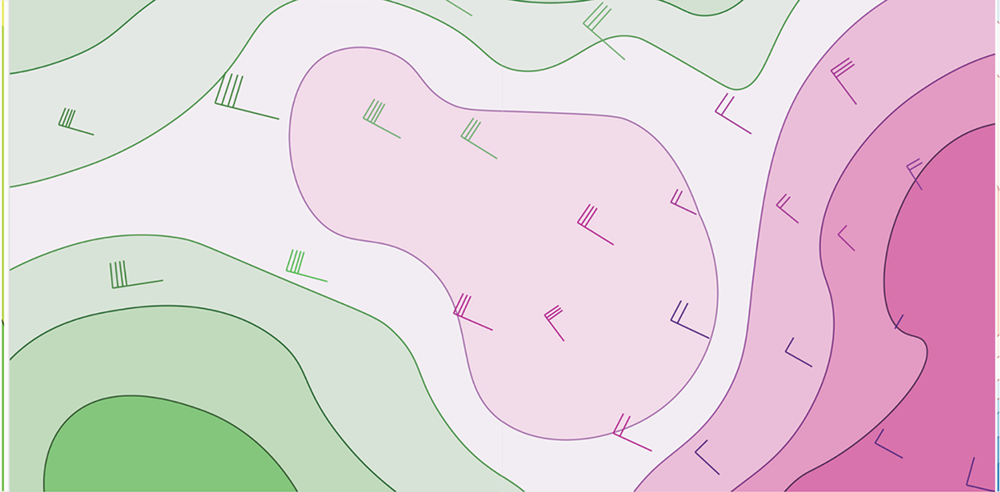
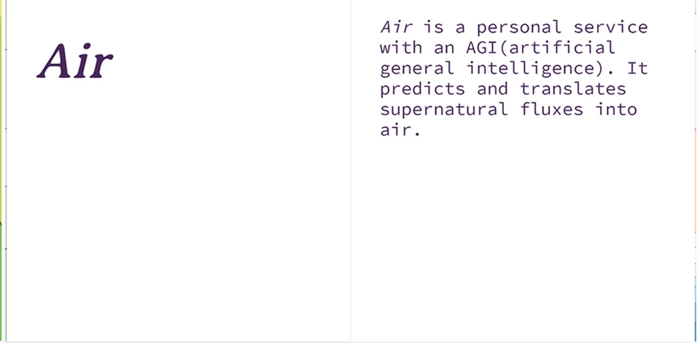
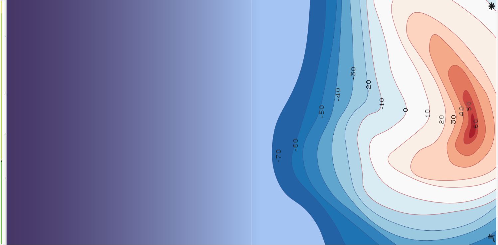
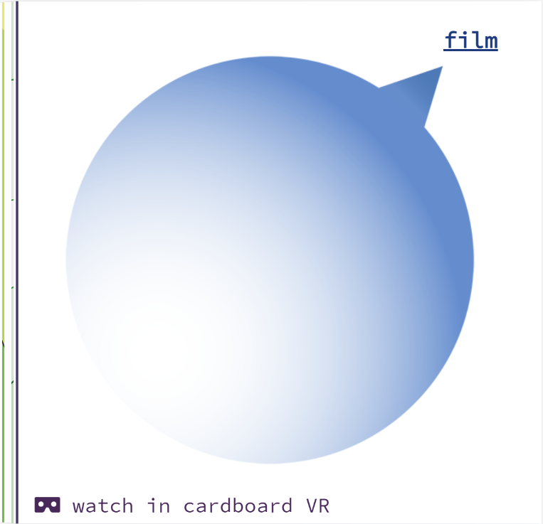
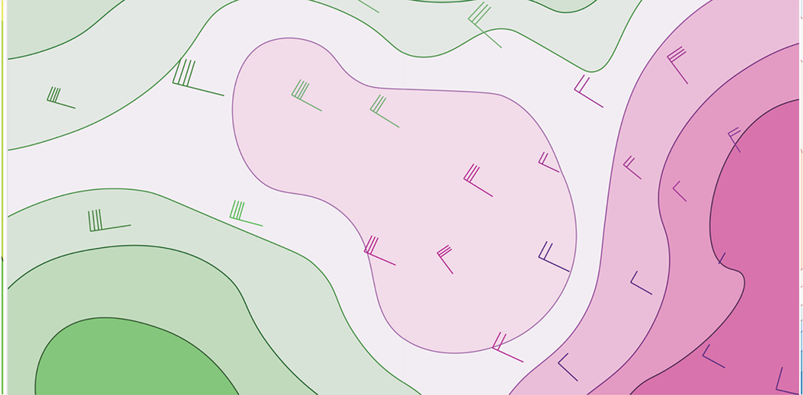
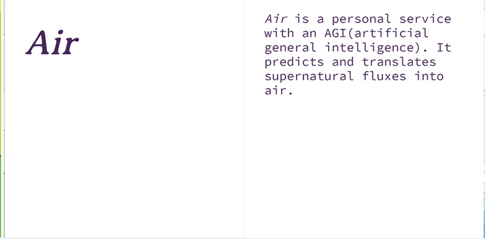
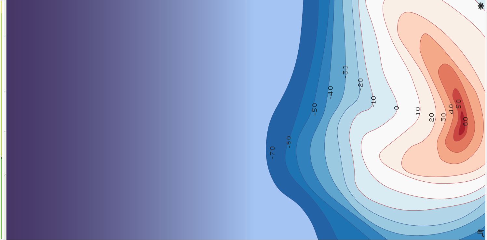
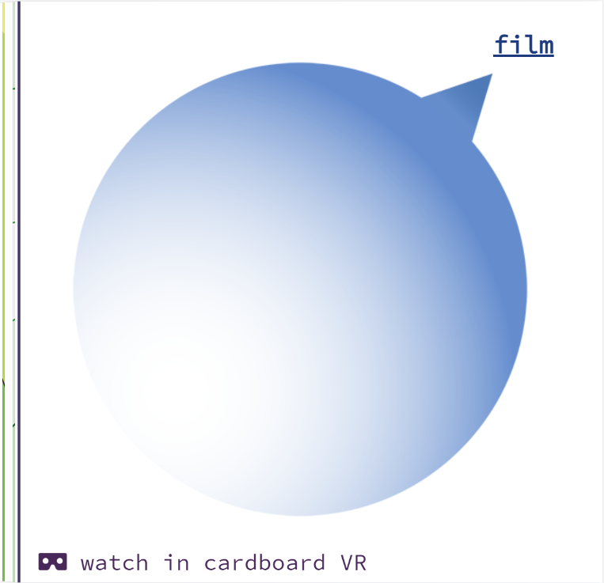
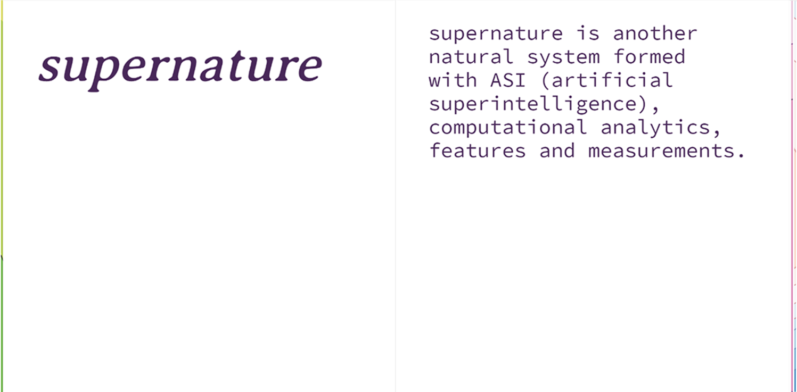
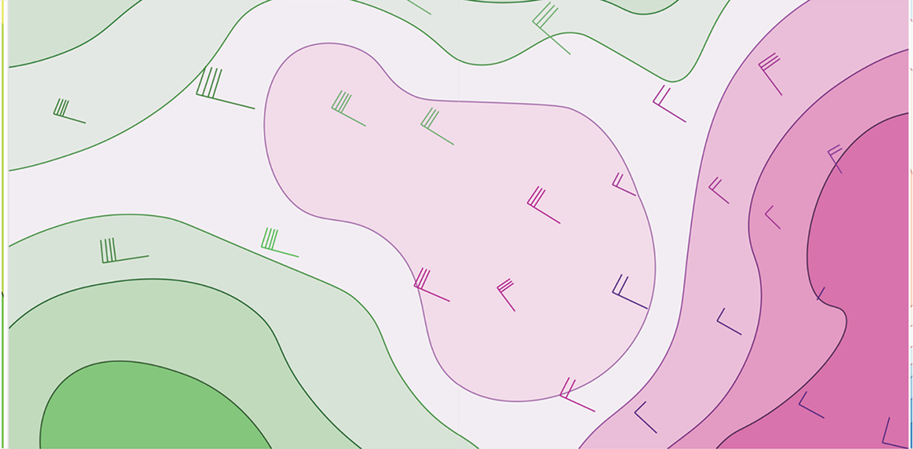
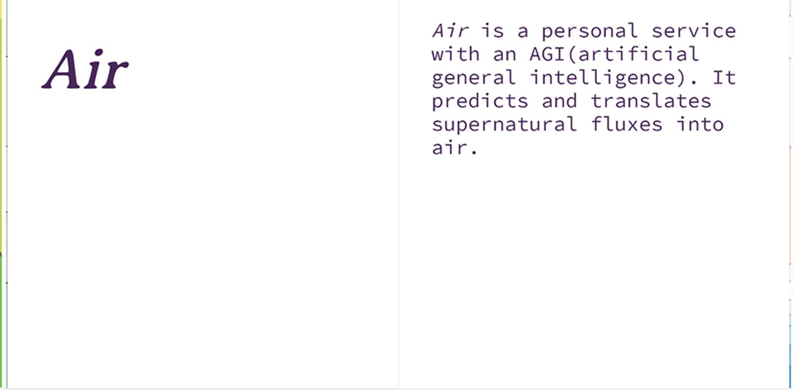
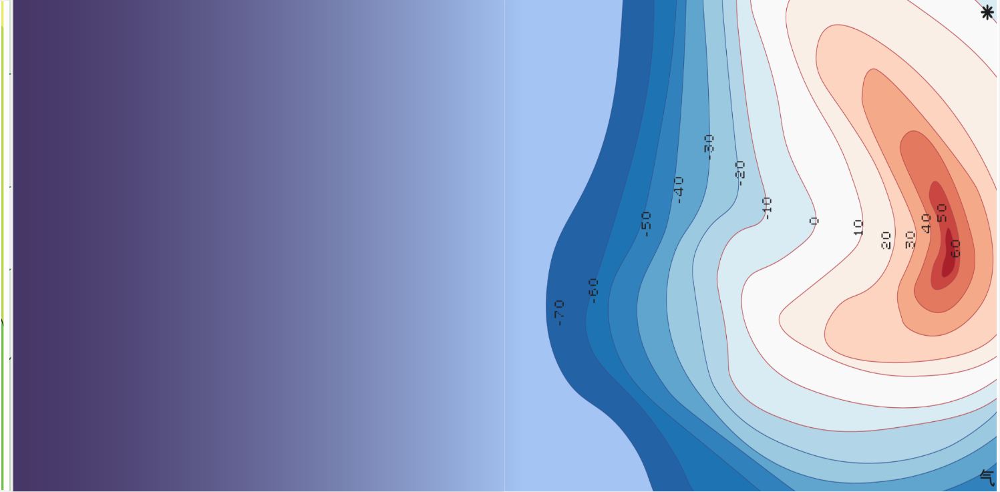
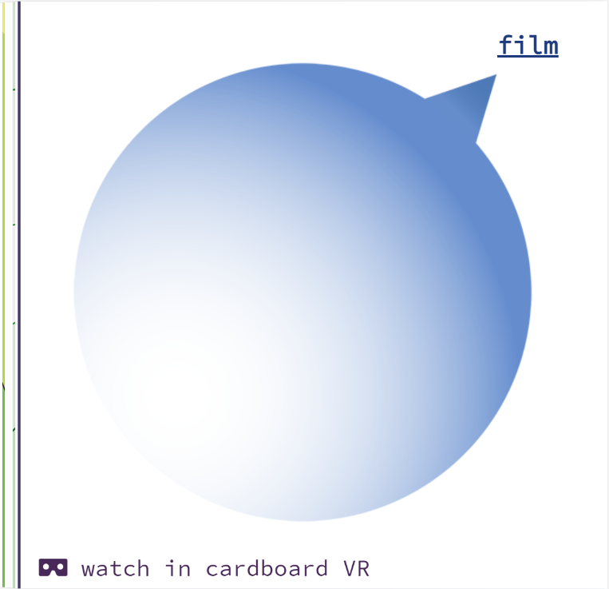
Air is one of a series of four projects, a collaboration by Zhengyang Huang and Zhengzhou Huang.
Go to Air:
As artificial superintelligence progresses, multiple superintelligences co-evolve into a supernature. We are now under the influence of two natural systems. The forces of supernature are hard to track as they extend beyond the three dimensions we live in. While we already have forecasting systems for disasters in nature, how can we forecast catastrophes that happen in supernature, like data gales, storms and hurricanes?
Air is here to help!
Air reads the atmosphere in supernature.
Air can forecast and translate supernature events into atmospheric phenomena we can understand.
Air helps you escape “hurricanes”.
In a speculative world where planet-scale ASI (artificial superintelligence) acts as a natrual system, Air is a 360 video depicting three days of a person living with a virtual assistant who helps you avoid disasters in this secondary nature. Three mornings is compressed into 16 minutes where time, body, data and intellegence are overlapped and displaced.